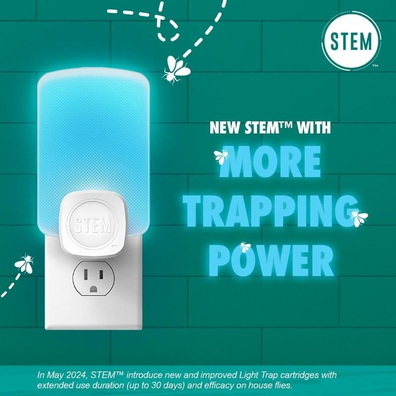

夏天是个可在阳光下活动、在树荫下纳凉的好季节，当然还有各种恼人的小动物；尤其是如果想打开门窗让空气流通、节省点电费的话，它们就更让人头疼了。雅虎生活网站撰稿人麦克卡贝（Carrie McCabe）表示，当她看到STEM捕虫灯时，决定试试它的「威力」。她说，没想到两周后成果「丰硕」，捕获的昆虫多到让她恶心。
麦克卡贝指出，STEM捕虫灯可以吸引、诱捕包括苍蝇、蚊子等飞虫，而不需要化学品或杀虫剂，既不会制造脏乱、无异味，也不用担心威胁家人或宠物的健康。这款捕虫灯会发出蓝光来吸引昆虫，让它们就像飞蛾扑火般，当靠近时就会被牢牢黏在蓝光后面、可更换的黏贴片上，不含杀虫剂也能完成诱捕任务。
它的安装十分简单，盒子里有个捕虫灯、一片标示有「可补充」的黏贴片，以及如何组装的说明书；之后，就是等待了。麦克卡贝说，她每隔几天去看几眼，两周后决定检验这个小「陷阱」的成果；她表示，她简直不敢相信它捕获了这么多虫子，不仅是果蝇，还有其他叫不出名字的小虫，虽然很恶心，「但十分满意」。
目前优惠特价17元（价格以网站标示为准）的这款捕虫灯，唯一让麦克卡贝稍有微词的是，未多附一片可更换的黏贴片；不过，也可以再多花几块钱，另外购买补充包。
一位亚马逊购物者分享说，他们家有跳蚤出没，所以买了STEM捕虫灯。两天后便「抓」了60多只，一周后跳蚤便全被歼灭。她开心地说，它很有效，「比请专业除虫公司便宜多了」。
另一位表示，每年他们都要对抗烦人的果蝇，最后总是被打败。他试过不同的产品，目前这是最好的；今年不再发现果蝇，因为它们全被蓝光吸引、遭到诱捕，「以后绝对会继续购买」。
<
p style="font-size:0.7em; ">We independently select all products and services. if you click through links we provide, we may earn a commission.